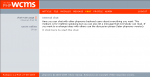
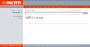

The backend-chat is for chats with many writers or administrators. If you wanna leave a massage for someone online, you can use the MASSAGES -function. You can use the chat as well as a kind of forum and every writer can leave there massages, wich can be directly be answered. This is possible because the history of the massages is stored in a database.
Chat
Chat for writers
|  | |
| click to enlarge |
The Main Chat Window
|  | |
| click to enlarge |
Click on "Click here to start the main Chat", to come to the Chat window.
Type your Message in the Field before send, and by press Enter or Click the Button .
.
In the right upper corner you can set hwo many chatlines should be shown in the chat window.
Type your Message in the Field before send, and by press Enter or Click the Button
. In the right upper corner you can set hwo many chatlines should be shown in the chat window.
Article created: Wednesday, 10. November 2004
Last Changes: Tuesday, 4. January 2011
Last Changes: Tuesday, 4. January 2011